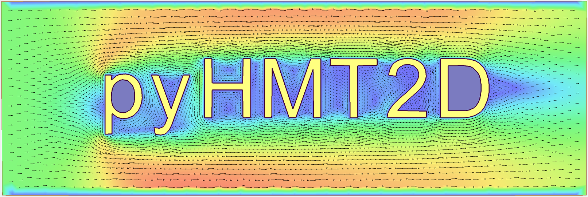

pyHMT2D logo¶
pyHMT2D - Python-based Hydraulic Modeling Tools - 2D¶
In the future, support for more 2D models may be added. To use this Python package, an obvious prerequisite is that the hydraulic model you want to use has been properly installed. Please see their respective website and documentation for installation and usage.
Supported Platform¶
Currently, only Windows is supported. This is because SRH-2D and HEC-RAS 2D are for Windows only. Most practitioners and engineers who run these 2D models use Windows almost exclusively.
Motivations¶
Two-dimensional (2D) hydraulic modeling, replacing one-dimensional (1D) modeling, has become the work horse for most engineering purposes in practice. Many agencies, such as U.S. DOT, Bureau of Reclamation (USBR), FEMA, and U.S. Army Corp of Engineers (USACE), have developed and promoted 2D hydraulic models to fulfill their respective missions. Example 2D models are SRH-2D (USBR) and HEC-RAS 2D (USACE). The motivations of this package are as follows:
One major motivation of this package is to efficiently and automatically run 2D hydraulic modeling simulations, for example, batch simulations to calibrate model runs. Many of the 2D models have some automation to certain degree. However, these models and their GUIs are closed source. Therefore, a modeler is limited to what he/she can do.
Most 2D models have good user interface and they have capability to produce good result visualizations and analysis. However, with this package and the power of the VTK library, 2D hydraulic modeling results can be visualized and analyzed with more flexibility and efficiency.
This package also serves as a bridge between 2D hydraulic models and the Python universe where many powerful libraries exist, for example statistics, machine learning, GIS, and parallel computing.
The read/write and transformation of 2D hydraulic model results can be used to feed other models which use the simulated flow field, for example external water quality models and fish models.
Model inter-comparison and evaluation. Almost all 2D hydraulic models solve the shallow-water equations. However, every model does it differently. How these differences manifest in their results and how to quantify/interpret the differences are of great interest to practitioners.
Features¶
For SRH-2D modeling:
read SRH-2D results (mainly into Python’s Numpy arrays)
convert SRH-2D results to VTK format, one of the most popular formats for scientific data
sample and probe simulation results (with the functionalities of VTK library)
control and modify SRH-2D simulations
For HEC-RAS 2D modeling:
read RAS2D results (HDF files, mainly into Python’s Numpy arrays)
convert RAS2D results to VTK
point and cell center data (depht, water surface elevation, velocity, etc.)
interpolate between point and cell data
face data (e.g., subterrain data)
convert RAS2D mesh, boundary conditions, and Manning’s n data into SRH-2D format such that SRH-2D and HEC-RAS 2D can run a case with exactly the same mesh for comparison purpose. As a side bonus, HEC-RAS 2D can be used as a mesh generator for SRH-2D.
sample and probe simulation results (with the functionalities of VTK library)
control and modify HEC-RAS 2D simulations
With the control and automation capability above, it is much easier to do the following:
Monte-Carlo simulations with scripting and Python’s statistic libraries
…
Other features:
calculate the difference between simulation results (regardless they are on the same mesh or not)
create and manipulate georeferenced terrain data for 2D modeling
conversion of 2D model mesh and result to 3D through extrusion (one layer or multiple layers) and VTK interpolation. This feature is useful to use 2D simulation result in 3D applications, e.g., fish passage design or use 2D result as initial condition for 3D CFD simulations. Currently, conversion to OpenFOAM is supported through Gmsh’s MSH file format.
Installation¶
This section describes how to install pyHMT2D on Windows. If you are not very familiar with Python, start with the Quick start instructions.
Prerequisites¶
Before installing pyHMT2D, make sure that:
Operating system: You are using Windows (10 or newer is recommended).
Git: Installed and available on your
PATH.You can check this in a Command Prompt or PowerShell window:
git --versionIf Git is not installed:
Go to the official Git website: https://git-scm.com/download/win
Download the 64-bit Git for Windows installer.
Run the installer and accept the defaults, making sure the option “Git from the command line and also from 3rd-party software†(or similar) is selected so
gitis added to yourPATH.After installation, open a new Command Prompt or PowerShell window and run
git --versionagain to verify.
Python: Python 3.8 or newer is installed and available on your
PATH.You can check this in a Command Prompt or PowerShell window:
python --version pip --version
If Python is not installed:
Go to the official Python website: https://www.python.org/downloads/windows/
Download the Windows installer for Python 3.8 or newer. The current pyHMT2D is developed and tested with Python 3.12.10.
Run the installer and accept the defaults, making sure the option “Add Python to PATH†is selected.
After installation, open a new Command Prompt or PowerShell window and run
python --versionandpip --versionagain to verify.
Hydraulic models: SRH-2D (via Aquaveo’s SMS software) and/or HEC-RAS are installed separately if you plan to control them with pyHMT2D. See their official websites for installers and documentation.
Clone and install in a development environment (recommended)¶
These steps install pyHMT2D from a local clone into a virtual environment so it does not interfere with other Python projects on your machine and you can easily run/modify the examples.
Create and activate a virtual environment In Windows Command Prompt (cmd.exe) or PowerShell, navigate to a folder of your choice (e.g.,
C:\Users\YourName\test), and create a virtual environment:
python -m venv .venv
Then activate the virtual environment: - Command Prompt (cmd.exe):
bash .venv\Scripts\activate - PowerShell:
bash .venv\Scripts\Activate.ps1 After activation, your prompt
should show (.venv) at the beginning.
Clone the pyHMT2D repository From the same terminal (with the virtual environment activated), clone the GitHub repository:
git clone https://github.com/psu-efd/pyHMT2D.git
cd pyHMT2D
Install pyHMT2D in development mode Install the package in editable (development) mode, so changes in the source code and examples are picked up immediately:
pip install -e .
If you want to update pyHMT2D to the latest version, you can pull the
latest changes from the GitHub repository: bash git pull Because
pyHMT2D is installed in development (editable) mode (-e), Python
immediately sees the updated source—no need to rerun
pip install -e . unless dependencies in setup.py changed.
Verify the installation (optional)
python -c "import pyHMT2D; print(pyHMT2D.__version__)"
If this command prints a version number without errors, pyHMT2D is
installed correctly and you can start exploring the examples under the
examples directory.
Example Usage (see the “examples†directory for more details)¶
There are at least two ways to use pyHMT2D:
use in your own Python code (more flexibility)
command line interface (CLI) (only limited functionalities)
Use in your own Python code (more flexibility)¶
To use pyHMT2D in your Python code, simply add:
import pyHMT2D
One example to use pyHMT2D to control the run of SRH-2D is as follows:
# the follow should be modified based on your installation of SRH-2D
version = "3.7.1"
srh_pre_path = r"C:\Program Files\SMS 13.4 64-bit\python\Lib\site-packages\srh2d_exe\SRH_Pre_Console.exe"
srh_path = r"C:\Program Files\SMS 13.4 64-bit\python\Lib\site-packages\srh2d_exe\SRH-2D_Console.exe"
extra_dll_path = r"C:\Program Files\SMS 13.4 64-bit\python\Lib\site-packages\srh2d_exe"
# create a SRH-2D model instance
my_srh_2d_model = pyHMT2D.SRH_2D.SRH_2D_Model(
version, srh_pre_path, srh_path, extra_dll_path, faceless=False
)
# initialize the SRH-2D model
my_srh_2d_model.init_model()
print("Hydraulic model name: ", my_srh_2d_model.getName())
print("Hydraulic model version: ", my_srh_2d_model.getVersion())
# open a SRH-2D project
my_srh_2d_model.open_project("Muncie.srhhydro")
# run SRH-2D Pre to preprocess the case
my_srh_2d_model.run_pre_model()
# run the SRH-2D model's current project
my_srh_2d_model.run_model()
# close the SRH-2D project
my_srh_2d_model.close_project()
# quit SRH-2D
my_srh_2d_model.exit_model()
Another example to use pyHMT2D to control the run of HEC-RAS is as follows:
# create a HEC-RAS model instance
my_hec_ras_model = pyHMT2D.RAS_2D.HEC_RAS_Model(version="6.6", faceless=False) #assume HEC-RAS 6.6 is installed
# initialize the HEC-RAS model
my_hec_ras_model.init_model()
# open a HEC-RAS project
my_hec_ras_model.open_project("Muncie2D.prj")
# run the HEC-RAS model's current project
my_hec_ras_model.run_model()
# close the HEC-RAS project
my_hec_ras_model.close_project()
# quit HEC-RAS
my_hec_ras_model.exit_model()
Command line interface (CLI)¶
Only limited functionalities of pyHMT2D can be used in this way. You only need to type commands in a Windows terminal (with the virtual Python environment activated), e.g.,
hmt-ras-to-srh Muncie2D.p01.hdf Terrain/TerrainMuncie_composite.tif srh_Muncie
which converts a RAS 2D case to SRH-2D. See
examples/command_line_interface for more details.
More examples can be found in the examples directory.
Limitations¶
For SRH-2D:
This package is developed and tested with SRH-2D v3.3, v3.6, and v3.7; other versions may work but has not been tested.
Currently, only flow data is processed; others such as sediment and water quality are ignored.
Currently pyHMT2D cannot manipulate other things such as hydraulic structures in the case configuration files. More functionalities can be added in the future.
For HEC-RAS 2D:
Only one 2D flow area is supported.
Only 2D flow area information is processed; others such as 1D channels and structures are ignored.
Currently, only flow data is processes; others such as sediment and water quality are ignored.
This package is currently developed using HEC-RAS v6.6; other versions may work but have not been tested.
RAS 2025 is currently not supported due to its development status.
API Documentation¶
Acknowledgements and References¶
pyHMT2D utilizes and/or benefits from several open source codes. The
usage of these codes strictly follows proper copyright laws and their
licenses (see the copies of their original licenses in the licenses
directory). We acknowledge their contributions.
In particular, the following packages were used and/or referenced:
Some of the examples and tests use dataset from public domain or authorized sources:
Munice case data from HEC-RAS example data set (public domain)
Duck Pond case data from Penn State University (with authorization for research and teaching purposes only)
Lidar data set from USGS (public domain)
The inclusion of these data sets in pyHMT2D is strictly for demonstration purpose only. Reuse or repurpose of these dataset without explicit authorization from the original owner or copyright holder is not permitted.
License¶
MIT
Contributors and Contributor Agreement¶
The list of contributors:¶
(To be added)
Contributor agreement¶
First of all, thanks for your interest in contributing to pyHMT2D. Collectively, we can make pyHMT2D more powerful, better, and easier to use.
Because of legal reasons and like many successful open source projects, contributors have to sign a “Contributor License Agreement†to grant their rights to “Usâ€. See details of the agreement on GitHub. The signing of the agreement is automatic when a pull request is issued.
If you are just a user of pyHMT2D, the contributor agreement is irrelevant.
How to cite pyHMT2D¶
If you use pyHMT2D in your research, please reference the GitHub repository:
@misc{liu_pyhmt2d,
author = {Xiaofeng Liu},
title = {pyHMT2D: Python-based Hydraulic Modeling Tools - 2D},
year = {2026},
howpublished = {\url{https://github.com/psu-efd/pyHMT2D}},
note = {Accessed: YYYY-MM-DD}
}